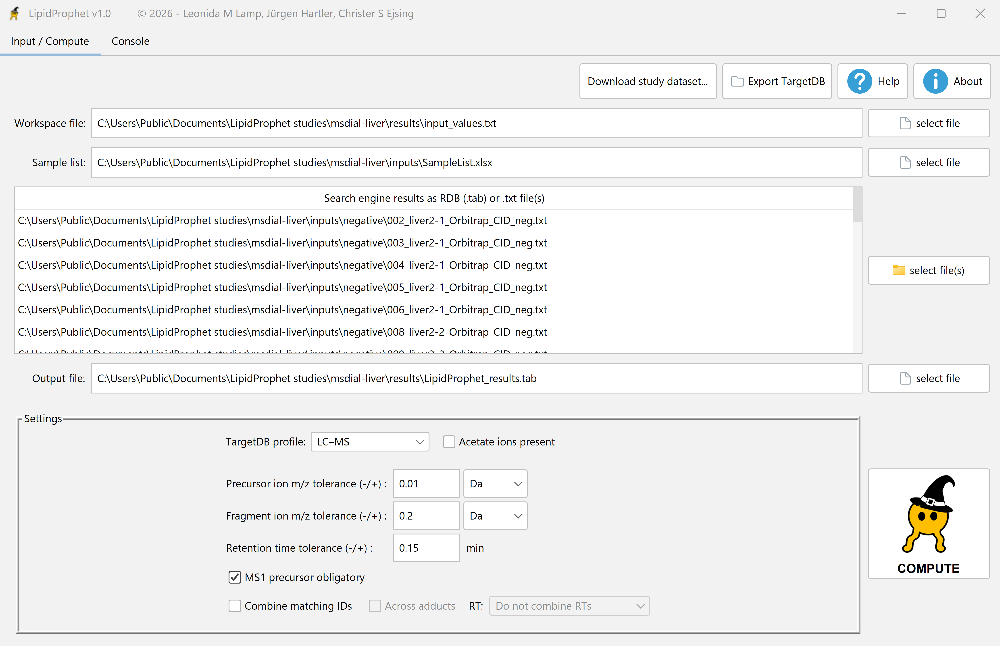
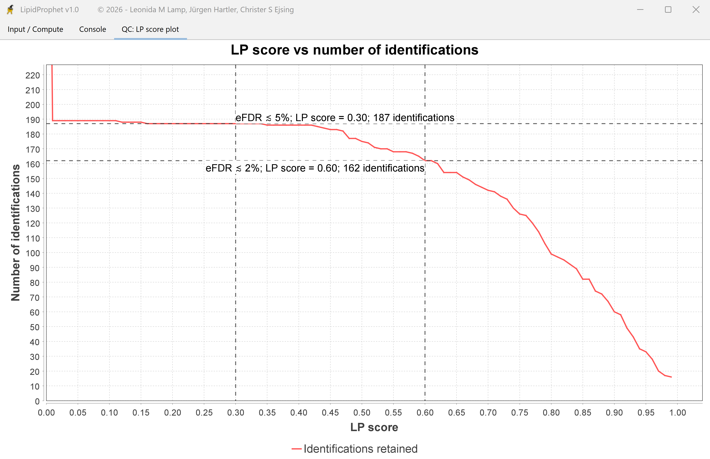

1. Export each analysis as text
After peak picking and annotation, choose Peak list → Text in MS-DIAL and save one .txt file per analysis. An alignment table combines measurements and cannot serve as this input. Keep the original headers, annotations, and MS² spectra in the peak-list export.
2. Match the filenames to the sample list
Use the filename without .txt as the RAW_ID in SampleList. For example, 002_liver2-1_Orbitrap_CID_neg.txt maps to 002_liver2-1_Orbitrap_CID_neg in the liver study. Keep the IDs distinct for each replicate and acquisition series. Set up the scoring groups.
3. Select the LC–MS profile
Choose the peak-list files and sample list on Input / Compute. Set TargetDB profile to LC-MS. Match the adduct chemistry and the mass and retention-time windows to the method used in MS-DIAL.


4. Compute and check the result
If an export is rejected, check that it is an individual peak list with its original headers.
Choose a workspace and writable .tab output, then click Compute. In the exported table, Original search engine identification name connects a scored row to the upstream annotation.


Open LC-MS liver (MS-DIAL) in the study chooser to follow the example shown here. The package contains the individual peak lists, a matching sample list, and a reference table. Get the study files.